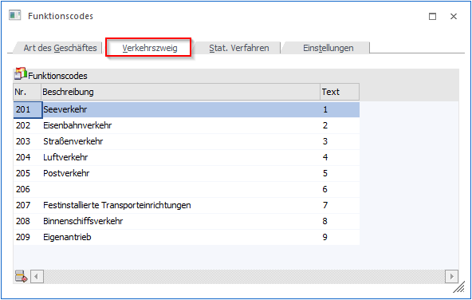

Unter Verkehrszweig versteht man das mutmaßliche Verkehrsmittel, mit dem die Waren das Gebiet Deutschland/Österreich verlassen bzw. in das Gebiet Deutschland/Österreich gelangen. Die entsprechenden Codes können im Register "Verkehrszweig" editiert werden.

In der Tabelle werden die Funktionscodes aufgeführt. Eine automatische Pflege findet von Seiten mesonic nicht statt.
Ø Nummer (201 - 209)
Die Nummer wird vom Programm automatisch vergeben. Sie dient zur internen Kennzeichnung.
Ø Beschreibung
In der Spalte "Beschreibung" kann eine Beschreibung für den jeweiligen Verkehrszweig hinterlegt werden.
Ø Text
In der Spalte "Text" muss der vom Statistischen Zentral- bzw. Bundesamt vorgegebene Code hinterlegt werden.
Beispiel
|
Nummer |
Beschreibung |
Text |
|
201 |
Seeverkehr |
1 |
Tabellenbuttons

Ø Zeile entfernen
Mit dem Button "Zeile entfernen" können Zeilen aus der Tabelle gelöscht werden.
Ø Ausgabe Excel
Durch Anwahl des Buttons "Ausgabe Excel" wird der Inhalt der Tabelle an Microsoft Excel übergeben.
Ø Tabelleneinstellungen speichern
Die Spalten einer Tabelle können grundsätzlich an beliebige Positionen verschoben, bzw. in der Breite entsprechend angepasst werden. Durch Anwahl des Buttons "Tabelleneinstellungen speichern" werden die Einstellungen benutzerspezifisch gespeichert und bei dem nächsten Aufruf des Programmpunktes wieder vorgeschlagen.
Ø Gesamteinstellungen speichern
Im Gegensatz zu "Tabelleneinstellungen speichern" können mit "Gesamteinstellungen speichern" mehrere Tabellenaufbauten gespeichert und nach Wunsch geladen werden. Zusätzlich werden Sonderfunktionen der Tabelle (z.B. "Spalte gruppieren") ebenfalls bei der Speicherung bedacht.
Achtung
Vom Statistischen Zentral- bzw. Bundesamt werden für Österreich und Deutschland folgende Code-Möglichkeiten vorgegeben (genauere Erklärungen erhalten Sie über das Statische Zentral- bzw. Bundesamt):
|
Code |
Verkehrszweig |
|
1 |
Seeverkehr |
|
2 |
Eisenbahnverkehr |
|
3 |
Straßenverkehr |
|
4 |
Luftverkehr |
|
5 |
Postverkehr |
|
7 |
Festinstallierte Transporteinrichtungen |
|
8 |
Binnenschiffsverkehr |
|
9 |
Eigenantrieb |